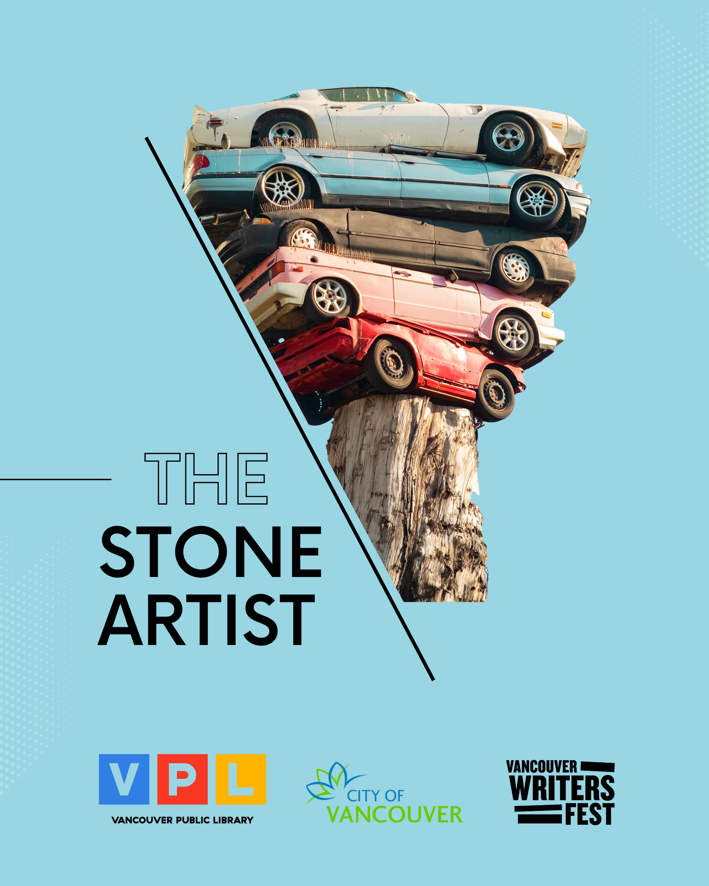

An abstract animated poetry video that used edited photos and graphics to convey the idea of the cycle of life, for submission to the Vancouver City Poems Poetry Video Contest hosted by Vancouver Poet Laureate Fiona Lam.
The contest aims to stimulate public engagement and interest in poetry about historical, cultural and ecological sites within the area that we now know as Vancouver and the UBC Endowment Lands. My poetry video was the final project for an upper level film course in SFU.
Tools and Skills
- Adobe After Effects — Composing the Animation
- Adobe Photoshop — Editing the Photos and Graphics
- Adobe Illustrator — Customize Vector Images